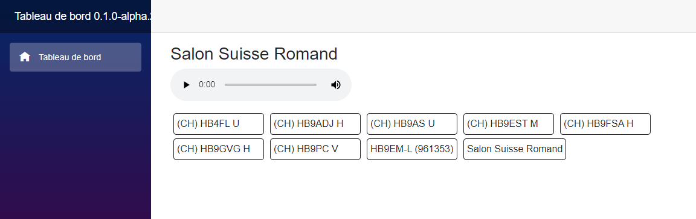

Salon Suisse Romand
Le point central de notre infrastructure.
Le Salon Suisse Romand permet d’interconnecter les différents points d’accès.
Il peut s’agir de HBSpot, de relais ou même de nœuds Echolink.
Dans le cas d’un HBSpot, le Salon Suisse Romand est déjà configuré.
Si vous utilisez un hotspot tiers, vous pouvez configurer l’accès au Salon Suisse Romand à l’aide des paramètres suivants.
- Adresse du réflecteur
- salonsuisseromand.hbspot.ch
- Utilisateur
- votre indicatif
- Mot de passe
- sur demande
Comment accéder au Salon Suisse Romand ?
Les relais
Via un relais ou un point d’accès simplex.
La liste des relais connectés évoluera au fil du temps.
Les HBSpot
En utilisant un HBSpot, vous pouvez directement vous connecter au Salon Suisse Romand depuis chez vous.
Echolink
Il existe une passerelle Echolink connectée en permanence sur le Salon Suisse Romand.
Il s’agit de HB9EM-L (961353).
Le tableau de bord
Le tableau de bord du Salon Suisse Romand vous permet de voir qui est connecté en temps réel et d’écouter les QSO en cours. Il est disponible à l’adresse salonsuisseromand.azurewebsites.net.
